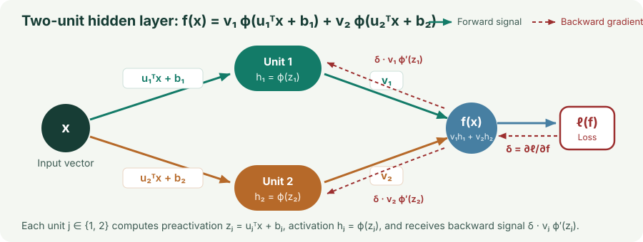
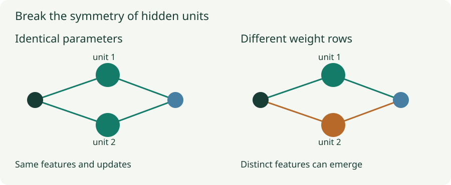

Initialization: Break Symmetry and Keep Signals Alive
See why identical hidden units stay identical, derive the per-layer signal multiplier, and track how weight scale compounds across depth.
Weight initialization has two jobs before the first gradient step: ensure hidden units learn distinct features, and keep forward activations and backward gradients from vanishing or exploding as they pass through many layers.
1. Why identical hidden units stay identical

Take a two-unit hidden layer $f(x)=v_1\phi(u_1^\top x+b_1)+v_2\phi(u_2^\top x+b_2)$ with loss derivative $\delta=\partial\ell/\partial f$. By the chain rule, unit $j\in\{1,2\}$ receives gradients
Now compare three ways of initializing the parameters:
- Equal nonzero weights ($u_1=u_2$, $b_1=b_2$, $v_1=v_2$): Both units compute the exact same activation $\phi(u_1^\top x+b_1)$ and receive the exact same gradients $\partial\ell/\partial u_1=\partial\ell/\partial u_2$ and $\partial\ell/\partial v_1=\partial\ell/\partial v_2$. Every deterministic update changes both units identically, so the layer collapses to a single duplicated feature forever.
- All-zero weights ($u_j=0$, $v_j=0$): Since $v_j=0$, the incoming-weight gradient $\partial\ell/\partial u_j=0$ on step 1, while both outgoing weights $v_1,v_2$ receive the same gradient $\delta\phi(b_j)$ and remain locked together.
- Zero biases ($b_j=0$) with random weights ($u_1\ne u_2$): Distinct random weight rows $u_1\ne u_2$ already produce different preactivations $u_j^\top x$ and different gradients on the very first pass, so initializing biases to zero is completely safe.

2. How one layer changes signal scale
Breaking symmetry only requires random weights, but picking an arbitrary scale like $W_{ij}\sim\mathcal N(0,0.01^2)$ fails in deep networks. Consider a single preactivation $z=\sum_{j=1}^{n_{\rm in}}W_ja_j$, where weights $W_j$ are independent with mean $\mathbb E[W_j]=0$ and variance $\operatorname{Var}(W_j)=\mathbb E[W_j^2]=s_W^2$, and are independent of the inputs $a_j$, which have second moment $q=\mathbb E[a_j^2]$.
We can compute the output second moment $\mathbb E[z^2]$ in three steps:
- 1. Expand the square of the sum:
$$z^2=\left(\sum_{j=1}^{n_{\rm in}}W_ja_j\right)^2=\sum_{j=1}^{n_{\rm in}}W_j^2a_j^2+\sum_{j\ne k}W_jW_ka_ja_k.$$
- 2. Cross terms vanish ($j\ne k$): Because $W_j$ and $W_k$ are independent of each other and of the inputs with $\mathbb E[W_j]=0$, every off-diagonal term drops out: $\mathbb E[W_jW_ka_ja_k]=\mathbb E[W_j]\mathbb E[W_k]\mathbb E[a_ja_k]=0$.
- 3. Sum the $n_{\rm in}$ diagonal terms: Each squared term has expectation $\mathbb E[W_j^2a_j^2]=\mathbb E[W_j^2]\mathbb E[a_j^2]=s_W^2q$, so adding $n_{\rm in}$ of them gives:
$$\mathbb E[z]=0,\qquad\mathbb E[z^2]=n_{\rm in}\,s_W^2\,q.$$
Notice that the recurrence tracks the second moment $\mathbb E[a_j^2]=\operatorname{Var}(a_j)+(\mathbb E[a_j])^2$, which equals variance only when $\mathbb E[a_j]=0$. For a layer of width $n_{\rm in}=100$, choosing $s_W=0.1$ gives multiplier $n_{\rm in}s_W^2=100(0.01)=1$, preserving signal scale. Choosing $s_W=0.01$ gives $100(0.0001)=0.01$, shrinking the second moment $100\times$ in a single layer.
3. Compounding across depth: forward and backward
In an $L$-layer linear chain where every layer has width $n$ and per-layer multiplier $c=ns_W^2$, the second moment multiplies by $c$ at every layer:
Even a small per-layer mismatch compounds exponentially: across $L=20$ layers, $c=0.8$ shrinks signal to $0.8^{20}\approx 0.0115$ ($1.15\%$ of the input), whereas $c=1.2$ amplifies it to $1.2^{20}\approx 38.3$.
The exact same compounding happens during backpropagation. For $h_l=\phi(z_l)$ and $z_l=W_lh_{l-1}$, let $g_l=\partial\ell/\partial h_l$. The chain rule gives
Because $W_l^\top$ sums over $n_{\rm out}$ output units, the backward second moment per coordinate scales with $n_{\rm out}s_W^2$ (multiplied by $\mathbb E[\phi'(z_l)^2]$). Forward propagation counts inputs $n_{\rm in}$; backward propagation counts outputs $n_{\rm out}$.
4. Lab: measure a sampled network before training
The lab below propagates $48$ Gaussian input vectors forward and $48$ Gaussian output-gradient probes backward through an untrained width-$32$ network initialized with $W_{ij}\sim\mathcal N(0, g^2/32)$, so the linear per-layer multiplier is $c=32(g^2/32)=g^2$.
Follow values forward and derivatives backward
Each layer has width 32 and zero bias. Weight entries are Gaussian with standard deviation $g/\sqrt{32}$. The experiment propagates 48 independent Gaussian input vectors, then backpropagates independent Gaussian output directions through the same sampled network. No optimizer steps are taken.
- Linear exponential scaling: Select
Linearand compare $g=0.8$, $g=1.0$, and $g=1.25$. On the $\log_{10}$ vertical axis, $q_l = g^{2l}q_0$ traces a straight line with slope $2\log_{10}g$. - Tanh saturation: Select
Tanhwith $g=2.0$. Forward activations stay bounded inside $(-1,1)$, yet backward gradients still vanish because $\tanh'(z)=1-\tanh^2(z)\approx 0$ in the saturated tails. - ReLU halving: Select
ReLUwith $g=1.0$. Because ReLU zeros out negative values, both curves drop by roughly $\log_{10}(0.5)\approx -0.3$ per layer—motivating He’s $g=\sqrt{2}$ scaling in Chapter 3.
5. Questions worth answering
Distinct random weight rows $u_j$ already give each hidden unit a different preactivation $u_j^\top x$ and a different gradient on step 1, so $b_j=0$ does not trap units in symmetry.
Yes. When $|\tanh(z)|\approx 1$, the activation is O(1) but its derivative $1-\tanh^2(z)\approx 0$, causing backward products $\prod_l W_l^\top \operatorname{diag}(\phi'(z_l))$ to vanish.
Because $\mathbb E[(W_j a_j)^2]=\mathbb E[W_j^2]\mathbb E[a_j^2]=s_W^2\mathbb E[a_j^2]$. After a non-negative activation like ReLU, $\mathbb E[a_j]>0$, so $\mathbb E[a_j^2]=\operatorname{Var}(a_j)+(\mathbb E[a_j])^2$ is strictly larger than $\operatorname{Var}(a_j)$.
Sources
Glorot and Bengio, Understanding the Difficulty of Training Deep Feedforward Neural Networks; He et al., Delving Deep into Rectifiers; Saxe et al., Deep Linear Network Dynamics.